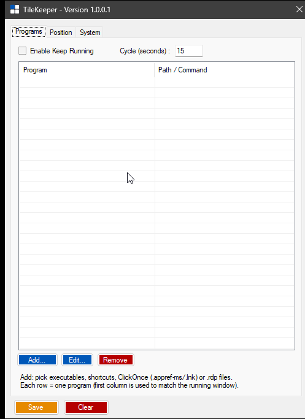
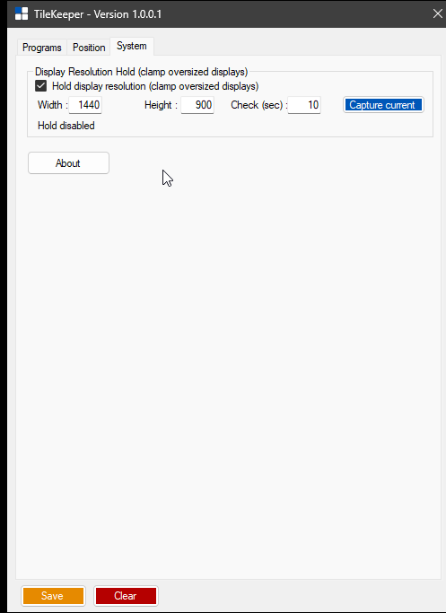
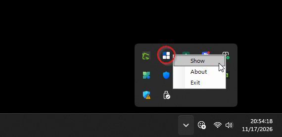

TileKeeper
A Windows tray utility that keeps selected programs running and restores their windows to the monitors and grid cells you chose.

Screenshots




What it does
- Relaunches configured programs when they exit.
- Moves matching windows to the assigned monitor and 3×3 grid cell.
- Pins apps to fixed cells or fills the remaining space automatically.
- Optional borderless mode and display-resolution hold.